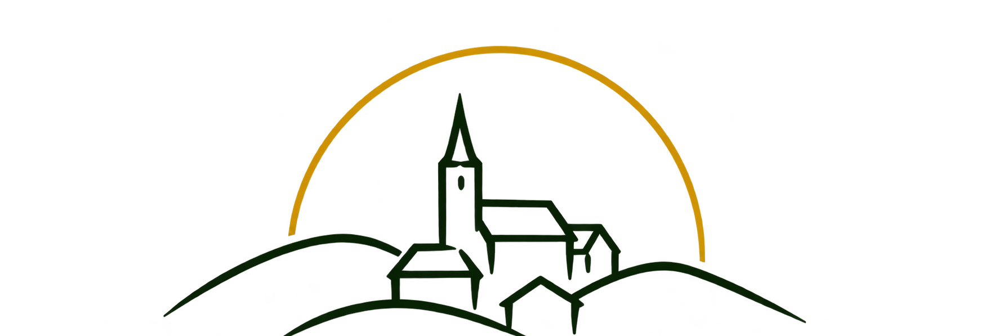

DER SCHINDBERGBRÄU ADVENTSKALENDER 2026
Advent, Advent, das Gläschen brennt! Andere zählen die Tage bis Weihnachten, wir zählen lieber die Gelegenheiten zum Anstoßen.
PALIM PALIM UND PROST!
✦
Im Vorschau-Modus sind alle Türchen geöffnet. Später lässt sich jedes Türchen passend zum Kalendertag freischalten.